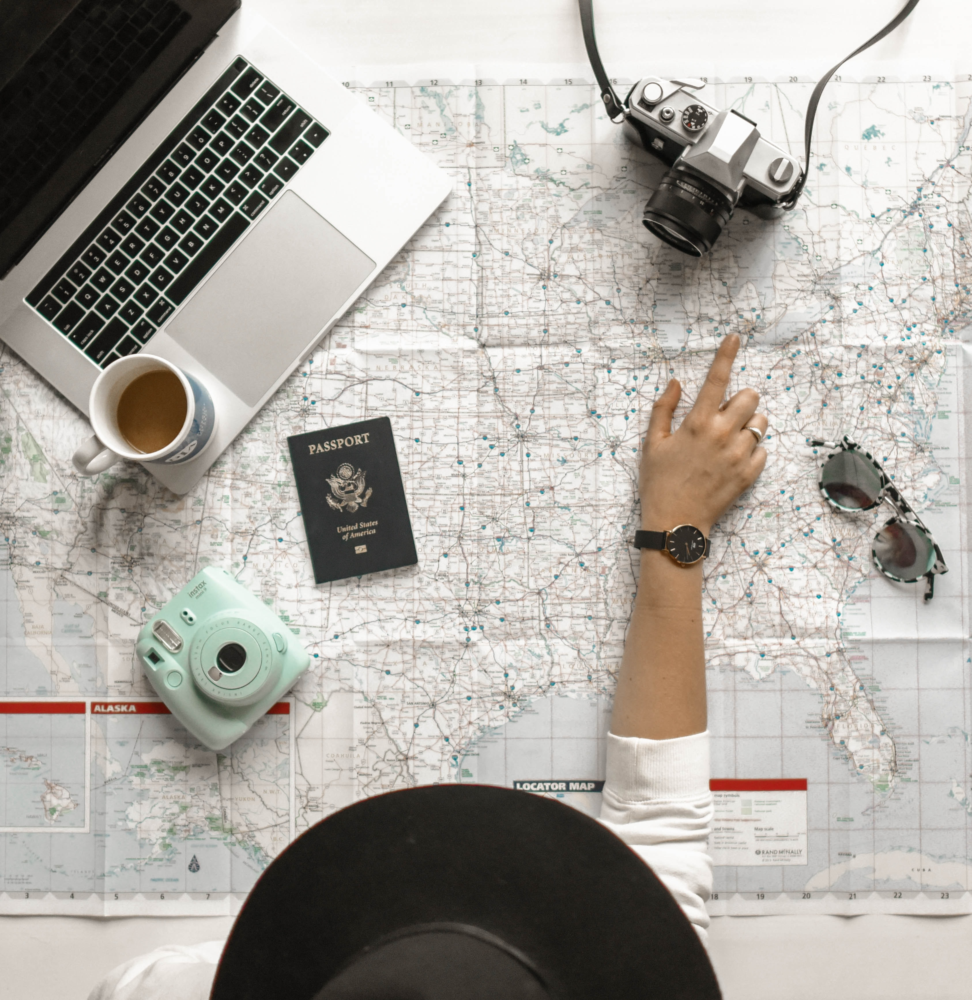

Top 15 Budget-Friendly Travel Destinations Around the World
One of the biggest misconceptions people have when thinking about international travel is that it is going to cost a fortune. The reality is that most people are able to travel, often times long-term, on a relatively tight budget.
While flights can typically account for the biggest expense, budget accommodation and eating inexpensively can bring down costs significantly. And, most importantly, the actual destination of your trip can play a big factor in your budget.
Asia, The Continent of Dreams
Not only the largest continent on Earth but the most populous too, Asia is home to some of the most astounding and alluring cities in the world. The sheer variety and diversity means that each city has its own unique look, feel, and identity, with something new to discover wherever you go.
While some are renowned for their fantastic culinary scenes and pounding nightlife, others boast breathtaking historical sights and cultural landmarks. Their settings vary too: some are set on beautiful bays while others are perched amongst the mountains or nestled away in arid deserts.
Other Budget Friendly Cities of the World
There are many factors to keep in mind when evaluating your trip, including what to do before leaving and your budget. To help you get started, we’ve put together a guide on how to travel the world, including everything from how to start looking into your trip to how to save money once you’re abroad.
Foods, and Street Foods
Do you think trying different types of food is an advantage of traveling?
Do you think the real taste of traditional foods can be found on street foods
If yes, then we will provide you list of variety of dishes to try. If no, we will provide empirical evidence to motivate you to try healthy street foods
Tips and Adivice
Exploring exotic places doesn’t have to cost a fortune and you certainly don’t need to win the lottery to travel the world – not if you know how to watch your pennies. We’ve complied some tried and tested tips to help you plan a holiday on a budget.